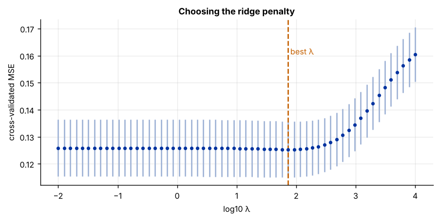
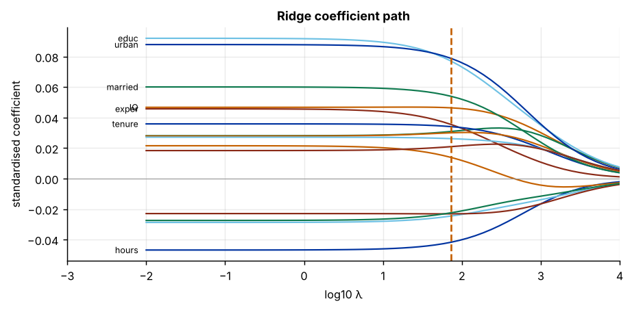

Step 1The question and the model
How well can a man's wage be predicted from his ability, schooling, experience and background? The Blackburn–Neumark data, used throughout Wooldridge's textbook, record 15 candidate predictors for 663 men with complete data: two test scores (IQ and the Knowledge of the World of Work test), schooling, experience, tenure, age, marital status, race, region, urban residence, siblings, birth order and both parents' education. Unlike the exam-score example in the LASSO guide, nearly all of these plausibly matter a little. That is the setting for ridge.
Ridge regression (Hoerl and Kennard 1970) adds a squared penalty to the least-squares objective:
The squared penalty pulls every coefficient towards zero but, unlike the LASSO penalty, never sets one exactly to zero. It trades a little bias for a large reduction in variance, and it has a closed-form solution: \(\hat\beta = (X'X + \lambda I)^{-1}X'y\).
| Variable | Definition | Variable | Definition |
|---|---|---|---|
lwage |
Log monthly wage (outcome) | married |
1 if married |
hours |
Average weekly hours | black |
1 if black |
IQ |
IQ score | south, urban |
1 if in the South / an SMSA |
KWW |
Knowledge of world of work score | sibs |
Number of siblings |
educ |
Years of schooling | brthord |
Birth order |
exper, tenure |
Years of experience / with employer | meduc, feduc |
Mother's / father's schooling |
age |
Age in years |
When is ridge the right choice?
When the true model is dense (many predictors with small effects), LASSO's habit of setting coefficients to zero throws away real signal, and ridge predicts better. When it is sparse (a few strong effects), LASSO wins. The selection tool decides with the share of predictors LASSO keeps at the one-standard-error penalty: half or more means dense, so ridge.
Step 2Load the data and confirm the starting point
import numpy as np
import pandas as pd
from sklearn.model_selection import KFold, cross_val_score
from sklearn.pipeline import make_pipeline
from sklearn.preprocessing import StandardScaler
from sklearn.linear_model import RidgeCV, Ridge, LassoCV, Lasso, LinearRegression
from sklearn.ensemble import RandomForestRegressor
df = pd.read_csv("wage2.csv")
y, X = df["lwage"], df.drop(columns="lwage")
print(f"N = {len(df)} men, p = {X.shape[1]} predictors")
r = X.corr().abs().where(~np.eye(X.shape[1], dtype=bool))
print(f"largest |r| between predictors: {r.max().max():.2f} ({' and '.join(r.stack().idxmax())})")
cv = KFold(5, shuffle=True, random_state=0)
rmse = lambda m: (-cross_val_score(m, X, y, cv=cv, scoring="neg_mean_squared_error").mean()) ** 0.5
r_l = rmse(make_pipeline(StandardScaler(), LassoCV(cv=5, random_state=0)))
r_f = rmse(RandomForestRegressor(n_estimators=300, min_samples_leaf=5, max_features=0.5, random_state=0))
print(f"cross-validated RMSE: LASSO {r_l:.4f}, random forest {r_f:.4f}, forest gain {1 - r_f / r_l:+.1%}")
Xs = StandardScaler().fit_transform(X)
lc = LassoCV(cv=KFold(5, shuffle=True, random_state=0), random_state=0).fit(Xs, y)
m, se = lc.mse_path_.mean(1), lc.mse_path_.std(1) / np.sqrt(5)
lam_1se = lc.alphas_[m <= m.min() + se[m.argmin()]].max()
kept = X.columns[Lasso(alpha=lam_1se).fit(Xs, y).coef_ != 0]
print(f"LASSO at lambda_1se keeps {len(kept)} of {X.shape[1]} predictors ({len(kept) / X.shape[1]:.0%})")N = 663 men, p = 15 predictors largest |r| between predictors: 0.58 (sibs and brthord) cross-validated RMSE: LASSO 0.3551, random forest 0.3594, forest gain -1.2% LASSO at lambda_1se keeps 11 of 15 predictors (73%)
All three conditions for ridge hold: the forest does not beat the linear model, no correlation exceeds 0.8, and LASSO keeps well over half of the predictors even at its conservative penalty. The signal is spread across many variables.
How to write it: data section
The sample contains 663 men with complete records from the Blackburn–Neumark extract of the National Longitudinal Survey. The outcome is the log monthly wage in 1980. Fifteen predictors describe measured ability, schooling, labour-market experience, demographics and family background. A random forest does not improve on a linear model in five-fold cross-validation, and a LASSO fit retains most predictors, indicating many small effects; we therefore use ridge regression.
Step 3Standardise, then choose the penalty by cross-validation
The penalty acts on the size of the coefficients, so the predictors must be on a common scale; standardise them inside the pipeline. Then search a grid of \(\lambda\) values. For ridge, leave-one-out cross-validation has a closed form and is almost free (RidgeCV uses it by default), but five-fold CV is shown here to match the other guides.
import matplotlib.pyplot as plt
lams = np.logspace(-2, 4, 60)
cvr = [(-cross_val_score(make_pipeline(StandardScaler(), Ridge(alpha=a)), X, y, cv=cv, scoring="neg_mean_squared_error")) for a in lams]
mse = np.array([c.mean() for c in cvr]); sd = np.array([c.std() / np.sqrt(5) for c in cvr])
lam = lams[mse.argmin()]
print(f"best lambda = {lam:.1f}; CV RMSE = {mse.min() ** .5:.4f} (OLS, lambda = 0: {rmse(make_pipeline(StandardScaler(), LinearRegression())):.4f})")
fig, ax = plt.subplots()
ax.errorbar(np.log10(lams), mse, yerr=sd, fmt="o", ms=3, color="#0033a0", ecolor="#9fb3d6")
ax.axvline(np.log10(lam), ls="--", color="#c46000"); ax.text(np.log10(lam), mse.max(), " best λ", color="#c46000")
ax.set_xlabel("log10 λ"); ax.set_ylabel("cross-validated MSE"); ax.set_title("Choosing the ridge penalty")best lambda = 73.2; CV RMSE = 0.3540 (OLS, lambda = 0: 0.3548)

The error curve is shallow: moderate shrinkage helps a little, and only very large penalties (which shrink everything towards zero) hurt. That is typical of a dense, well-measured problem: ridge improves on OLS at the margin rather than dramatically.
Step 4How much does ridge shrink each coefficient?
ols = LinearRegression().fit(Xs, y).coef_
rid = Ridge(alpha=lam).fit(Xs, y).coef_
tab = pd.DataFrame({"OLS": ols, "ridge": rid}, index=X.columns)
tab["shrinkage"] = (1 - tab["ridge"] / tab["OLS"]).map("{:.0%}".format)
print(tab.round(4).sort_values("ridge", key=abs, ascending=False))OLS ridge shrinkage urban 0.0879 0.0788 10% educ 0.0920 0.0770 16% married 0.0601 0.0539 10% IQ 0.0468 0.0464 1% hours -0.0468 -0.0417 11% exper 0.0457 0.0355 22% tenure 0.0359 0.0341 5% KWW 0.0281 0.0309 -10% age 0.0279 0.0300 -8% meduc 0.0272 0.0262 4% black -0.0288 -0.0245 15% south -0.0229 -0.0231 -1% brthord -0.0274 -0.0224 18% feduc 0.0184 0.0210 -14% sibs 0.0215 0.0138 36%
Coefficients are per standard deviation of each predictor. Ridge keeps every predictor and shrinks the vector of coefficients as a whole; most individual estimates move towards zero (siblings by a third, experience by a fifth), but a few correlated ones grow slightly (the KWW score, age, father's education), because ridge spreads weight across predictors that carry overlapping information. The ridge path shows how all coefficients move smoothly towards zero as the penalty grows, without any of them hitting zero:
path = np.array([Ridge(alpha=a).fit(Xs, y).coef_ for a in lams])
fig, ax = plt.subplots()
for j, name in enumerate(X.columns):
ax.plot(np.log10(lams), path[:, j], lw=1.2)
if abs(path[0, j]) > .03:
ax.text(np.log10(lams[0]) - .1, path[0, j], name, fontsize=7, ha="right", va="center")
ax.axvline(np.log10(lam), ls="--", color="#c46000"); ax.axhline(0, color="#999", lw=.6)
ax.set_xlim(np.log10(lams[0]) - 1, np.log10(lams[-1])); ax.set_xlabel("log10 λ"); ax.set_ylabel("standardised coefficient"); ax.set_title("Ridge coefficient path")
Step 5Effective degrees of freedom
Ridge does not drop variables, so "number of predictors" no longer measures model complexity. The effective degrees of freedom do: with \(d_j\) the singular values of the standardised \(X\),
which equals \(p\) at \(\lambda = 0\) (OLS) and falls towards 0 as \(\lambda\) grows.
d = np.linalg.svd(Xs, compute_uv=False)
dof = lambda a: (d ** 2 / (d ** 2 + a)).sum()
print(f"effective degrees of freedom at the chosen lambda: {dof(lam):.1f} of {X.shape[1]}")effective degrees of freedom at the chosen lambda: 13.0 of 15
Report this number: it tells the reader how much the penalty actually constrained the model.
Step 6Accuracy on data the model has not seen
Choosing \(\lambda\) on the same folds that measure the error flatters the model. Nested cross-validation repeats the whole procedure, including the choice of \(\lambda\), inside each outer fold.
from sklearn.dummy import DummyRegressor
outer = KFold(5, shuffle=True, random_state=1)
models = {"mean only": DummyRegressor(),
"OLS": make_pipeline(StandardScaler(), LinearRegression()),
"ridge": make_pipeline(StandardScaler(), RidgeCV(alphas=lams)),
"LASSO": make_pipeline(StandardScaler(), LassoCV(cv=5, random_state=0)),
"random forest": RandomForestRegressor(n_estimators=300, min_samples_leaf=5, max_features=0.5, random_state=0)}
res = {k: (-cross_val_score(mm, X, y, cv=outer, scoring="neg_mean_squared_error")) ** 0.5 for k, mm in models.items()}
out = pd.DataFrame({"RMSE": {k: v.mean() for k, v in res.items()}, "s.d. across folds": {k: v.std() for k, v in res.items()}})
out["R² (out of sample)"] = 1 - out["RMSE"] ** 2 / y.var()
print(out.round(4))RMSE s.d. across folds R² (out of sample) mean only 0.4117 0.0175 0.0027 OLS 0.3578 0.0239 0.2467 ridge 0.3567 0.0228 0.2510 LASSO 0.3587 0.0238 0.2426 random forest 0.3636 0.0180 0.2221
The differences between the three linear models are small relative to their variation across folds: with 663 observations and 15 predictors, OLS is not badly overfitted, and ridge's gain is modest. That is an honest and common finding. Ridge earns its place when \(p\) is large relative to \(n\) or when predictors are noisy; report the comparison either way.
Step 7Write it up
best = Ridge(alpha=lam).fit(Xs, y)
final = pd.DataFrame({"ridge (per s.d.)": best.coef_, "OLS (per s.d.)": ols}, index=X.columns).round(4)
print(final.sort_values("ridge (per s.d.)", key=abs, ascending=False))
print(f"\nlambda = {lam:.1f}, effective df = {dof(lam):.1f}; nested CV RMSE: ridge {out.loc['ridge', 'RMSE']:.4f}, OLS {out.loc['OLS', 'RMSE']:.4f}, mean only {out.loc['mean only', 'RMSE']:.4f}")ridge (per s.d.) OLS (per s.d.) urban 0.0788 0.0879 educ 0.0770 0.0920 married 0.0539 0.0601 IQ 0.0464 0.0468 hours -0.0417 -0.0468 exper 0.0355 0.0457 tenure 0.0341 0.0359 KWW 0.0309 0.0281 age 0.0300 0.0279 meduc 0.0262 0.0272 black -0.0245 -0.0288 south -0.0231 -0.0229 brthord -0.0224 -0.0274 feduc 0.0210 0.0184 sibs 0.0138 0.0215 lambda = 73.2, effective df = 13.0; nested CV RMSE: ridge 0.3567, OLS 0.3578, mean only 0.4117
How to write it: results
We predict the log wage with ridge regression on fifteen standardised predictors, choosing the penalty by five-fold cross-validation. Because LASSO retains most predictors even at its one-standard-error penalty, the signal appears to be spread across many variables, the setting in which ridge's proportional shrinkage is preferable to variable selection. The largest standardised coefficients belong to urban residence, schooling, marital status, IQ and weekly hours (negative), followed by experience and tenure (Table X); race and the South enter negatively. The chosen penalty (λ = 73) reduces the effective degrees of freedom from 15 to 13. In nested cross-validation ridge has the lowest error of the models compared (RMSE 0.357 against 0.358 for OLS and 0.359 for LASSO), although the differences are small relative to their variation across folds; all three explain about a quarter of the out-of-sample variance, and a random forest does not improve on them.
Checklist for the paper
- Explain why the problem is dense (LASSO keeps most predictors) and why ridge is used.
- State the standardisation, the λ grid and the CV scheme; report λ and the effective degrees of freedom.
- Show OLS and ridge coefficients side by side, and the ridge path.
- Report nested out-of-sample accuracy against OLS, LASSO and a mean-only benchmark.
- Ridge coefficients are shrunk on purpose: do not attach OLS-style standard errors to them.